노이즈 제거 — 신호에서 의미를 꺼내는 법
45분
참고 교재: Think DSP: Digital Signal Processing in Python (Allen B. Downey)
소요 시간: 문제 제기 3분 + 이론 12분 + 시연 10분 + 실습 20분
1-1. 문제 제기 (3분)
CNC 밀링머신의 진동 센서가 수집하는 데이터에는 여러 신호가 뒤섞여 있습니다.
[실제 CNC 진동 데이터에 섞인 성분들]
절삭 신호 ──── 우리가 원하는 것 (공구-소재 접촉 정보)
스핀들 노이즈 ──── 회전체의 기계적 진동 (고주파, 일정한 패턴)
채터링 ──── 공구 떨림 (불규칙 고주파, 가공 불량의 전조)
전기 간섭 ──── 모터/인버터에서 오는 전자기 노이즈 (특정 주파수에 집중)Raw plot을 보면 이 성분들을 육안으로 구분하기 불가능합니다.
→ 핵심 질문: 우리가 원하는 신호만 꺼낼 수 있을까?
1-2. 이론 (12분)
① FFT로 먼저 보면 어떨까? (3분)
📖 Think DSP Ch.7 DFT / Ch.3 Non-Periodic Signals
FFT(Fast Fourier Transform)는 신호를 주파수 성분으로 분해합니다.
시간 영역 신호 x(t) → FFT → 주파수 스펙트럼 X(f)
진폭 진폭
│ /\/\ │ │ │ │
│ / \ /\/ │ │ │ │ │
└──────────── 시간 └─┴──┴────┴──┴── 주파수- 장점: "어떤 주파수 성분이 얼마나 있는가"를 한눈에 파악
- 단점: "그 주파수가 언제 발생했는가"를 알 수 없다
FFT의 핵심 한계 — 시간 정보 상실
예시) 채터링이 가공 시작 후 30초에 발생했는가, 50초에 발생했는가?
FFT로는 알 수 없음 → 시간-주파수 동시 분석이 필요FFT는 신호 전체를 하나의 스펙트럼으로 압축하기 때문에, 시간에 따라 변하는(비정상 신호, non-stationary) 데이터에는 적합하지 않습니다.
스펙트럼 분해(Spectral Decomposition) — 신호 처리의 가장 중요한 아이디어
"임의의 신호는 서로 다른 주파수를 갖는 사인파들의 합으로 표현될 수 있다"
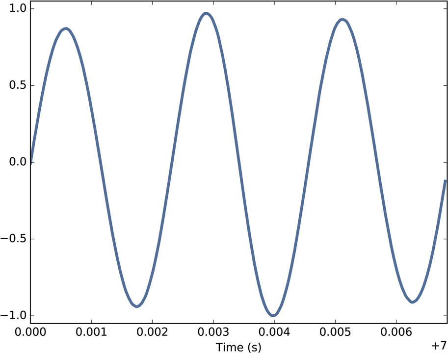
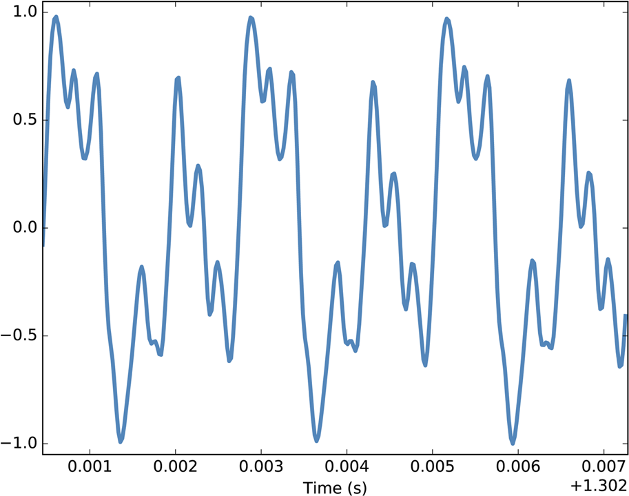
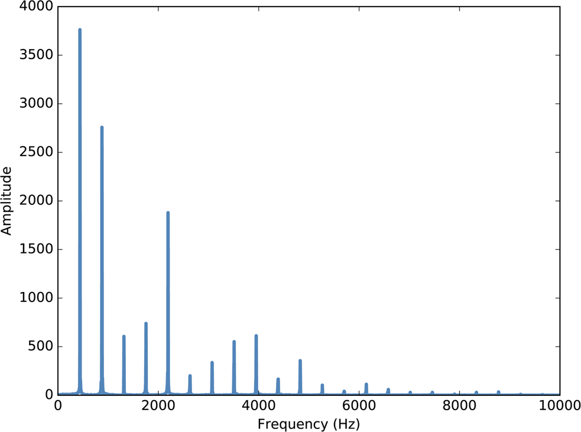
[주파수 성분의 구조]
기본 주파수(fundamental frequency): 가장 낮은 주파수 성분
고조파(harmonics): 기본 주파수의 정수배 주파수 성분들
→ 2차 고조파: 2 × f₀
→ 3차 고조파: 3 × f₀
예시) A4 음(440Hz)의 바이올린 신호:
기본: 440Hz (가장 큰 진폭)
1차 고조파: 880Hz (A5, 1옥타브 위)
2차 고조파: 1320Hz (E6, 완전 5도 위)CNC 진동 데이터에서도 동일: 절삭 신호 → 특정 주파수 피크, 스핀들 노이즈 → 고주파 대역 규칙적 분포, 채터링 → 불규칙 고주파
스펙트럼의 파워(Power): 진폭의 제곱. 노이즈 분석에서는 진폭 대신 파워를 사용하는 것이 일반적입니다. 파워는 에너지 측면에서 신호 강도를 더 잘 나타내며, 노이즈 종류별로 파워-주파수 관계가 특징적입니다.
Spectrogram — FFT의 시간 정보 상실 문제 해결
신호를 짧은 구간으로 나누어 각 구간의 스펙트럼을 계산한 뒤, 시간-주파수 2차원 플롯으로 시각화:
[Spectrogram 구조]
주파수 ↑
│ ■ ■ ← 고주파 성분이 특정 시간에만 나타남
│ ■■ ■■■ ← 시간에 따른 주파수 변화가 보임
│■■■ ■■■■■■ ← FFT 단일 스펙트럼에서는 놓치는 정보
└────────────→ 시간
구현: STFT (Short-Time Fourier Transform)
1. 신호를 Hamming window로 짧은 구간으로 분할
2. 각 구간에 FFT 적용
3. 결과를 시간-주파수 2D 맵으로 시각화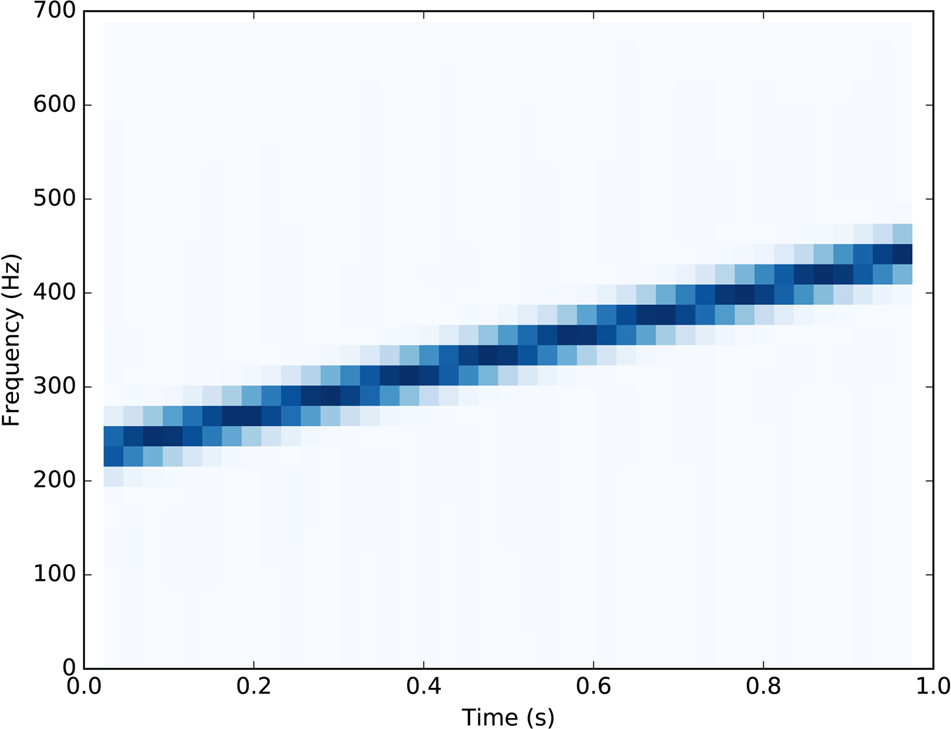
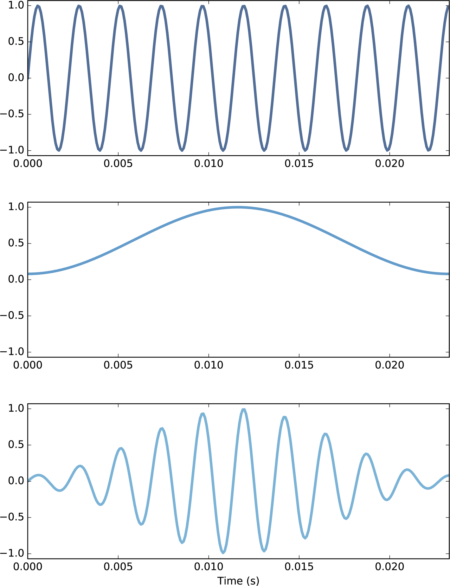
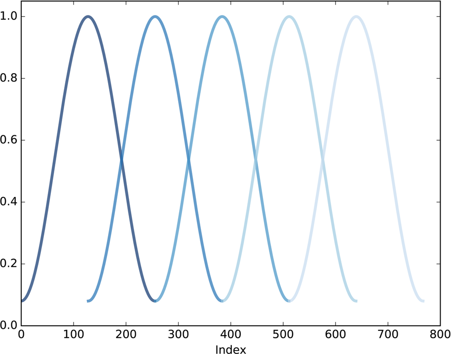
Gabor Limit(가보르 한계)
시간 해상도 ↑ = 주파수 해상도 ↓
시간 해상도 ↓ = 주파수 해상도 ↑
→ 구간을 짧게 자르면 시간은 정확해지지만 주파수가 뭉개짐
→ 구간을 길게 자르면 주파수는 정확해지지만 시간이 뭉개짐
→ 둘 다 완벽할 수는 없음 (불확정성 원리의 일종)→ 이것이 Wavelet Transform이 필요한 이유: 주파수에 따라 윈도우 크기를 자동 조절하여 Gabor Limit 우회
② Wavelet Transform의 직관 (3분)
📖 Think DSP Ch.3 / Ch.8
Wavelet Transform은 "돋보기를 스케일 바꿔가며 신호를 훑는 것"입니다.
큰 스케일 (저주파 돋보기) → 신호의 전체적인 추세(절삭 패턴)
중간 스케일 → 중간 주파수 성분 (스핀들 진동)
작은 스케일 (고주파 돋보기) → 빠른 변화(채터링, 전기 노이즈)
[Wavelet 분석 결과 예시]
레벨 1 (고주파) ──── 전기 간섭 + 채터링 → 제거 대상
레벨 2 (중주파) ──── 스핀들 노이즈 → 제거 대상
레벨 3 (저주파) ──── 절삭 신호 → 보존 대상
Approximation ──── 장기 추세 → 보존 대상FFT와의 결정적 차이: 주파수 정보 + 시간 위치 정보를 동시에 갖습니다.
노이즈의 종류와 특성 — 제거 대상을 정의하는 단계
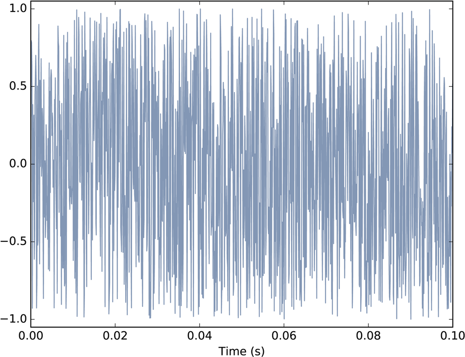
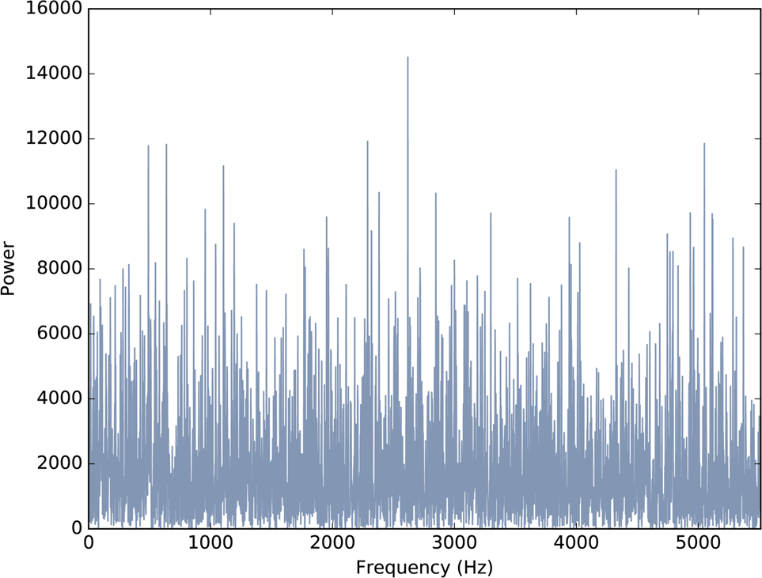
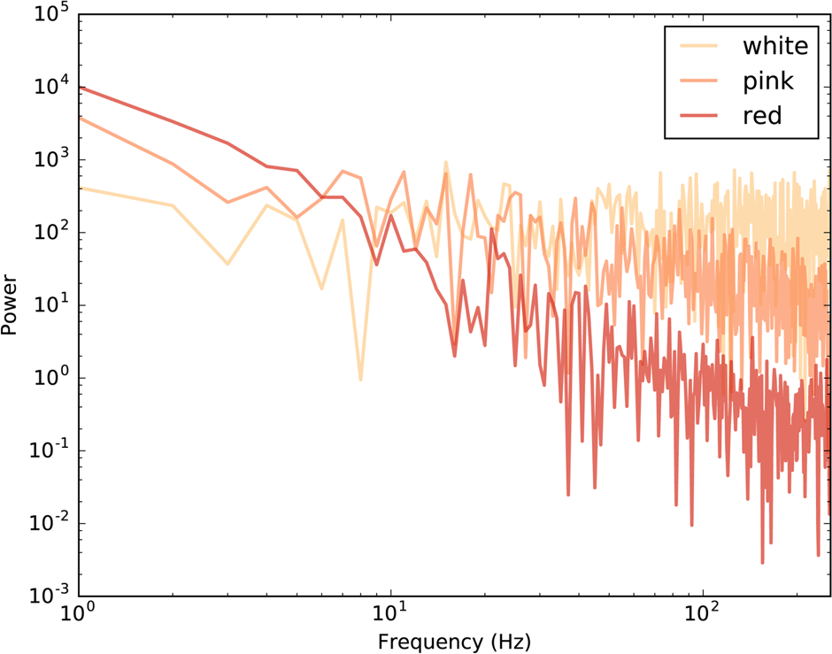
[노이즈 분류 — 파워와 주파수의 관계]
백색 잡음 (White Noise):
→ 모든 주파수에서 동일한 파워 (P = 일정), 스펙트럼이 평평함
→ 예: 전기 간섭, 센서 열잡음
갈색 잡음 (Brownian/Red Noise):
→ 파워가 주파수에 반비례 (P ∝ 1/f²), 저주파에 파워 집중
→ 예: 기계적 드리프트, 온도 변화로 인한 센서 출력 이동
분홍 잡음 (Pink Noise, 1/f Noise):
→ 파워가 주파수에 반비례 (P ∝ 1/f), 백색과 갈색의 중간
가우시안 잡음 (Gaussian Noise):
→ 값이 정규분포를 따르는 무작위 잡음
→ Universal Threshold의 이론적 기반 (σ 추정 가능)제조 데이터에서의 의미: CNC 진동 노이즈는 대부분 백색 + 가우시안 혼합. 고주파 계수(cD1)에서 σ 추정 → Threshold 계산에 사용
③ Hard/Soft Threshold: 어떤 성분을 버릴 것인가 (3분)
📖 Think DSP Ch.8 Filtering and Convolution / Ch.4 Noise
Hard Threshold: |계수| < T → 0으로 설정 (잘라내기)
|계수| ≥ T → 그대로 유지
Soft Threshold: |계수| < T → 0으로 설정
|계수| ≥ T → 크기를 T만큼 줄임 (부드럽게 처리)선택 가이드:
- Hard: 강한 신호 보존, 경계에서 불연속 발생 가능
- Soft: 신호가 약간 왜곡되지만 더 부드러운 결과
- 제조 데이터 실무: 보통 Soft Threshold가 더 안정적임계값 T: T = σ × √(2 × log(N)) (Universal Threshold, Donoho & Johnstone, 1994)
필터링과 합성곱 (Think DSP Ch.8)
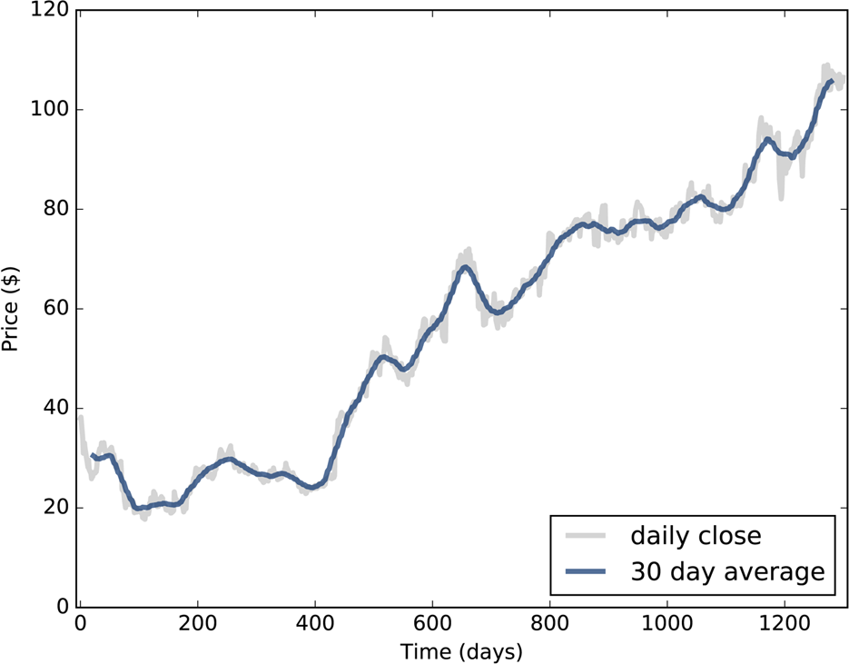
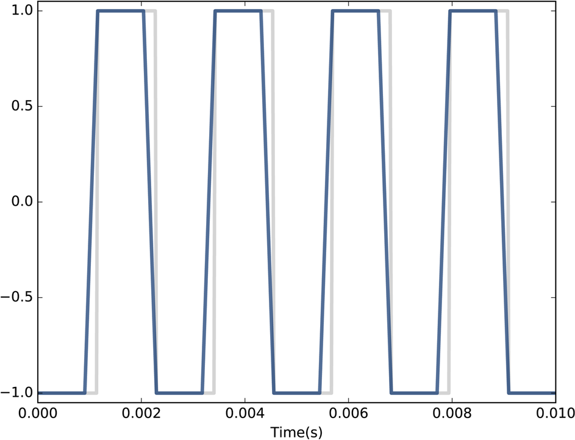
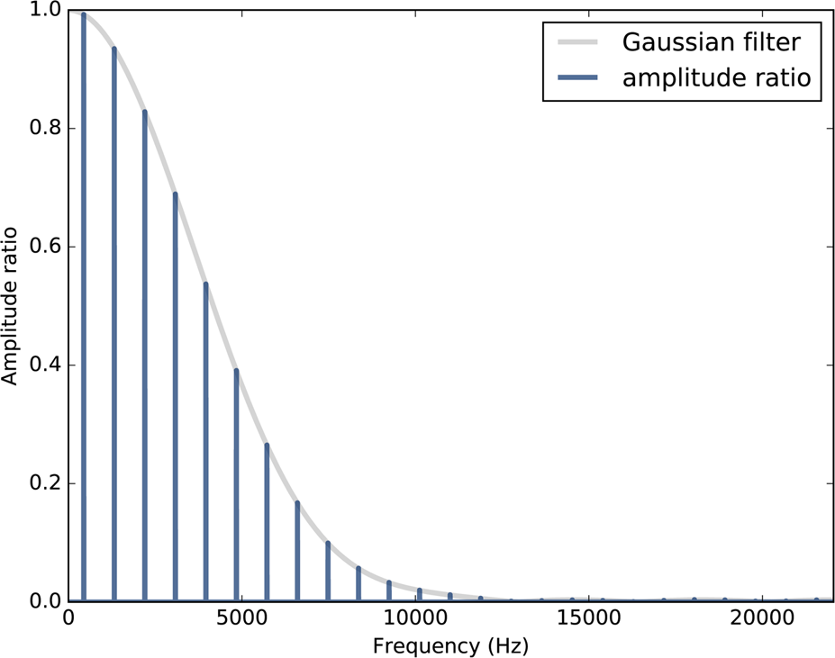
합성곱 정리(Convolution Theorem): 시간 영역에서의 합성곱 = 주파수 영역에서의 곱셈
DFT(f * g) = DFT(f) × DFT(g)
→ 이것이 FFT가 빠른 이유: O(N²) → O(N log N)
Wavelet threshold도 같은 원리:
1. Wavelet 분해 → 주파수 영역으로 변환 (합성곱 기반)
2. 계수에 threshold 적용 → 특정 주파수 성분 감쇠
3. 역 Wavelet 변환 → 시간 영역으로 복원④ pywt 라이브러리 핵심 함수 3개 (3분)
📖 Think DSP Ch.8 — pywt의 분해/재합성 대응 이론
pywt 3단계 흐름: 레고 블록을 분해 → 각 파트 점검 → 다시 조립
import pywt, numpy as np
# 1. 사용 가능한 wavelet 종류 확인
print(pywt.wavelist(kind='discrete')) # db, sym, haar 등
# 2. 다중 레벨 분해 (DWT)
coeffs = pywt.wavedec(signal, wavelet='db4', level=5)
# coeffs = [cA5, cD5, cD4, cD3, cD2, cD1]
# 근사 디테일5 ... 디테일1(최고주파)
# 3. 재합성 (역 DWT)
reconstructed = pywt.waverec(coeffs_modified, wavelet='db4')[전체 파이프라인]
원본 신호
↓ pywt.wavedec() ← 분해
계수 배열 [cA, cD5, cD4, cD3, cD2, cD1]
↓ threshold 적용 ← 노이즈 계수를 0에 가깝게
수정된 계수 배열
↓ pywt.waverec() ← 재합성
노이즈 제거된 신호db4)과 재합성할 때 쓴 이름이 같아야 제대로 복원됩니다.
1-3. Claude Code 시연 (10분)
시연 포인트: 코드 자체보다 Claude에게 어떻게 질문하는가를 주목하세요.
CNC 밀링머신 진동 데이터에서 채터링 노이즈를 제거하려고 해.
pywt 라이브러리를 사용해서:
1. db4 wavelet으로 5레벨 분해
2. 상위 2개 레벨(고주파)에 soft threshold 적용
3. 재합성 후 원본과 결과를 subplot으로 비교
샘플 데이터는 numpy로 직접 생성해줘.시연 흐름: Raw signal 생성 → wavedec 분해 → Threshold 적용 → waverec 재합성 → before/after 비교
시연 후 추가 질문: "db4 대신 sym5를 쓰면 어떤 차이가 있어?"
1-4. 실습 (20분)
| 조합 | Wavelet | Level | 관찰 포인트 |
|---|---|---|---|
| A | db4 | 3 | 기준선 |
| B | db4 | 5 | 레벨이 늘면? |
| C | sym5 | 3 | wavelet 종류 변경 시? |
| D | sym5 | 5 | 둘 다 변경 시? |
STEP 1 가상 신호 만들기
import numpy as np, pywt, matplotlib.pyplot as plt
np.random.seed(42)
t = np.linspace(0, 1, 1024)
cutting_signal = np.sin(2 * np.pi * 50 * t) # 50Hz 절삭 신호
spindle_noise = 0.3 * np.sin(2 * np.pi * 200 * t) # 200Hz 스핀들 노이즈
chatter = 0.2 * np.random.randn(len(t)) # 채터링
signal = cutting_signal + spindle_noise + chatterSTEP 2 노이즈 제거 함수 — 직접 채워보세요
def denoise_wavelet(signal, wavelet='db4', level=5, threshold_mode='soft'):
# TODO: 3줄을 채워 넣으세요
# 1. pywt.wavedec 로 분해
# 2. 고주파 계수에 threshold 적용
# 3. pywt.waverec 로 재합성
pass힌트: T = np.sqrt(2*np.log(len(signal))) * np.std(coeffs[-1])
STEP 3 결과 시각화
fig, axes = plt.subplots(2, 1, figsize=(12, 6))
axes[0].plot(t, signal, label='원본 신호', alpha=0.7)
# TODO: axes[1]에 denoised 결과 그리기
plt.tight_layout(); plt.show()데이터 불균형 — 99% 정확도의 함정
45분
참고 교재: Machine Learning for Imbalanced Data (Kumar Abhishek & Mounir Abdelaziz)
소요 시간: 문제 제기 3분 + 이론 13분 + 시연 10분 + 실습 19분
2-1. 문제 제기 (3분)
상황: 공장 불량 탐지 모델의 정확도가 99%. 잘 만든 걸까요?
[데이터 구성] 정상: 9,900개(99%) / 불량: 100개(1%)
[더미 모델] "모든 샘플을 정상으로 예측" → 정확도 = 99% ✓
하지만 불량 100개를 전부 놓쳤습니다
→ 정확도의 역설(Accuracy Paradox)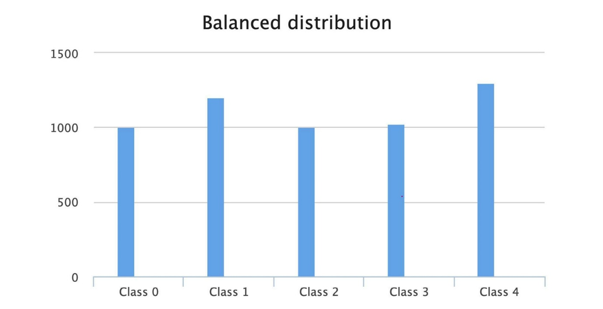
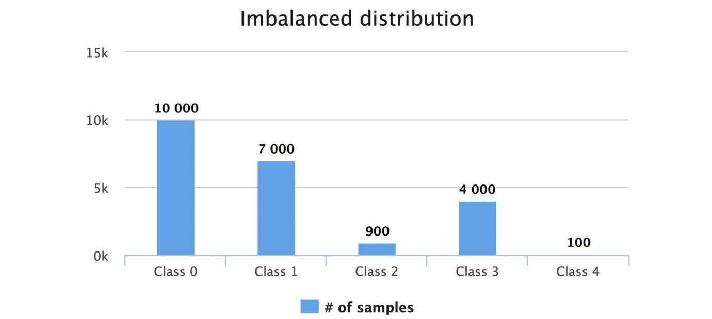
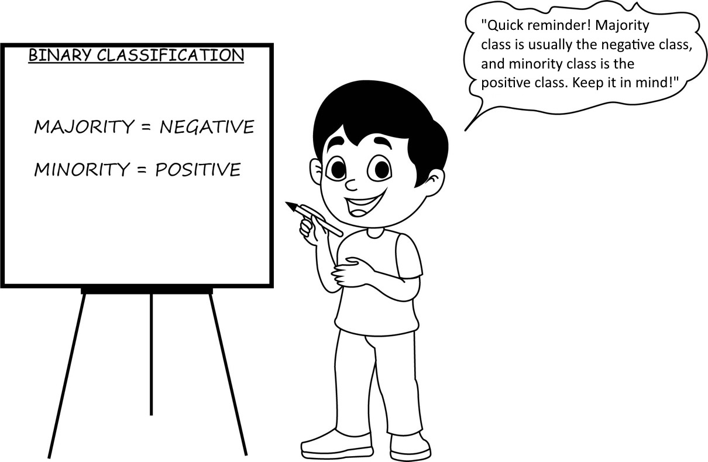
2-2. 이론 (13분)
① 정확도의 역설 → 올바른 평가 지표 (5분)
📖 ML for Imbalanced Data Ch.1
Precision (정밀도) = TP / (TP + FP) → "불량이라 예측한 것 중 실제 불량"
Recall (재현율) = TP / (TP + FN) → "실제 불량 중 모델이 잡아낸 비율" ← 핵심!
F1-Score = 2 × (Precision × Recall) / (Precision + Recall)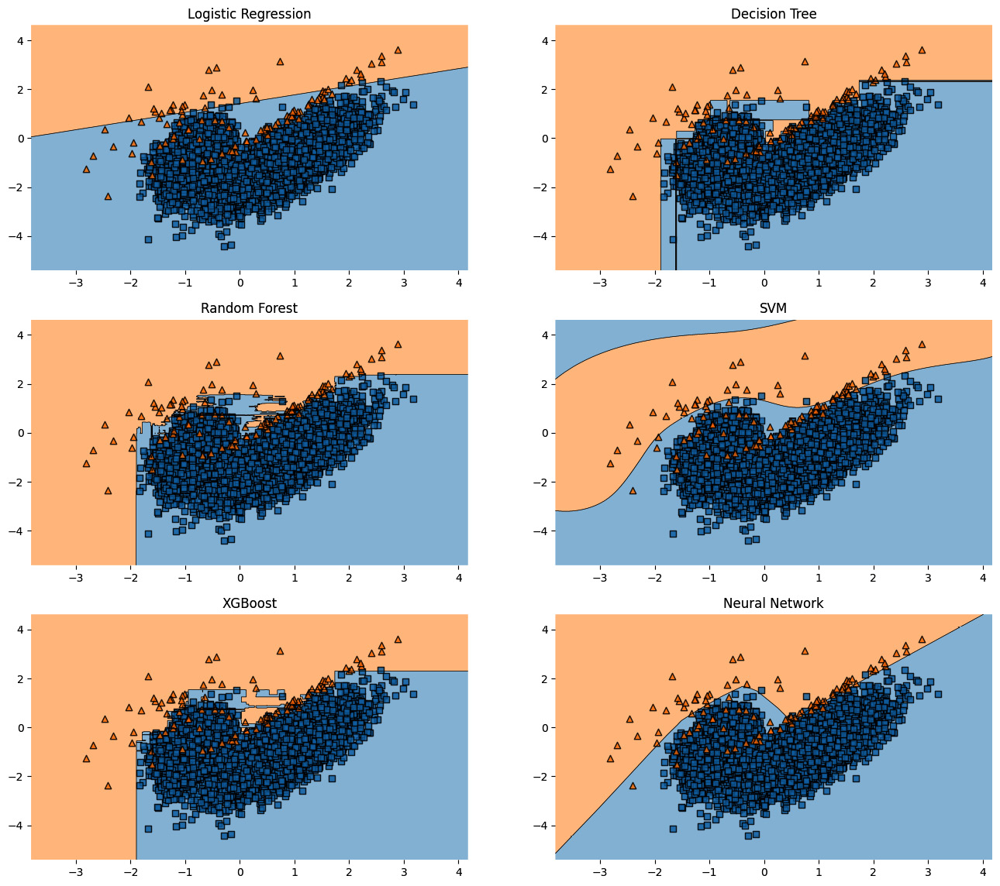
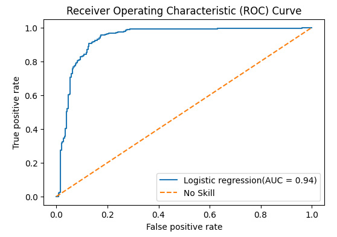
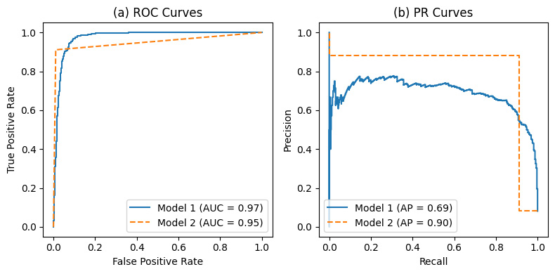
F-beta Score — 상황에 맞춰 Precision과 Recall 가중치 조절
F-β = (1 + β²) × (Precision × Recall) / (β² × Precision + Recall)
β = 1: F1-Score (동등 가중)
β > 1: Recall을 더 중시 (불량 탐지에서 놓치는 것이 더 치명적)
β < 1: Precision을 더 중시 (오탐 비용이 높을 때)
제조업에서는 보통 β=2 이상으로 설정하여 Recall 강조ROC Curve vs PR Curve — 불균형에서는 PR Curve가 더 유용
ROC Curve: TPR vs FPR → 불균형이 심하면 모델 간 차이가 안 보임
PR Curve: Precision vs Recall → 불균형에서도 모델 간 차이가 명확
결론: 불균형 제조 데이터에서는 PR Curve + F1-Score 조합 권장② SMOTE: 합성 샘플로 균형 맞추기 (4분)
📖 ML for Imbalanced Data Ch.2
SMOTE 동작 원리
1. 소수 클래스(불량) 샘플 하나 선택: x_i
2. k-최근접 이웃(kNN) 찾음: x_nn
3. 그 사이 임의 지점에 새 샘플 생성:
x_new = x_i + λ × (x_nn - x_i) (0 ≤ λ ≤ 1)2D 특징 공간 예시:
불량 ●─────────────● 불량
↑
SMOTE가 생성한
합성 샘플 ☆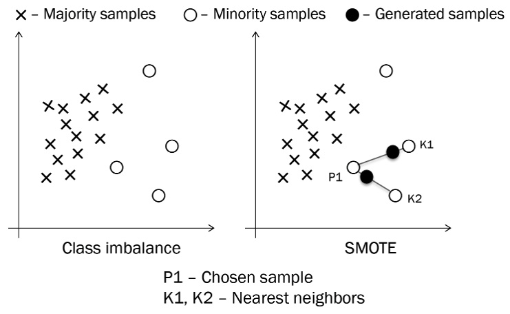
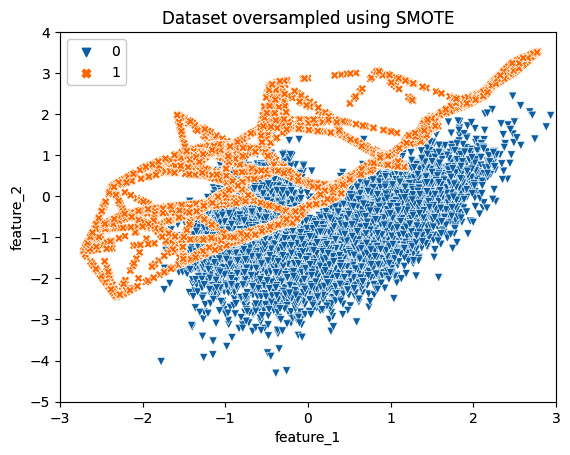
SMOTE 장점/주의점
- 장점: 단순 복사(Oversampling)보다 모델이 더 다양한 경계를 학습
- 주의: 노이즈 샘플 근처에서 생성된 합성 샘플은 오히려 혼란
- 핵심: SMOTE는 학습 데이터에만 적용! 테스트에 쓰면 부정행위
from imblearn.over_sampling import SMOTE
smote = SMOTE(k_neighbors=5, random_state=42)
X_resampled, y_resampled = smote.fit_resample(X_train, y_train)SMOTE 변형 알고리즘 (Ch.2)
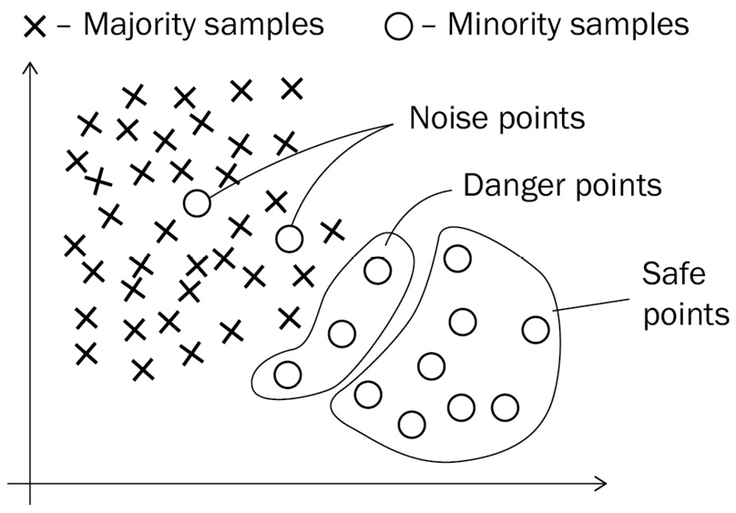
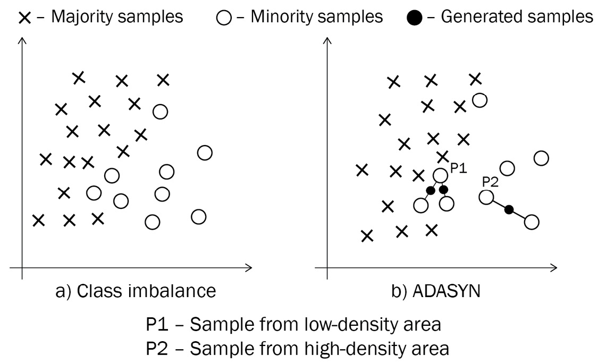
ADASYN: 학습하기 어려운 샘플(경계 근처)에 더 많이 생성
Borderline-SMOTE: 경계에 있는 샘플만 선택하여 SMOTE 적용
SMOTE-ENN: SMOTE 후 ENN으로 노이즈 제거 (깨끗하지만 느림)
SMOTE-Tomek: SMOTE + Tomek link 제거 (경계 선명화)
실무 팁: 기본 SMOTE로 시작 → 불만족시 ADASYN → SMOTE-ENN 순차 시도
k_neighbors는 소수 클래스 샘플 수보다 작아야 함③ class_weight: 손실함수 레벨에서 조정 (2분)
📖 ML for Imbalanced Data Ch.5 Cost-Sensitive Learning
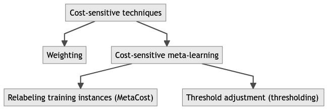
from sklearn.ensemble import RandomForestClassifier
# 자동 가중치 (데이터 비율 기반)
model = RandomForestClassifier(class_weight='balanced', random_state=42)
# 수동 설정 (도메인 지식 기반)
model = RandomForestClassifier(class_weight={0: 1, 1: 99}, random_state=42)직관: 불량 1개 틀리면 정상 99개 틀린 것과 같은 페널티 → 모델이 불량에 더 민감하게 반응
가중치 결정 3가지 방식
1. 데이터 비율 기반: class_weight='balanced' (자동, 빠른 시작점)
→ w_j = N / (n_classes × n_j)
2. 비용 기반: 도메인 지식으로 수동 설정
→ 예: "불량 리콜 비용 = 정상 폐기 비용의 50배"
→ class_weight={0: 1, 1: 50}
3. 탐색 기반: GridSearchCV로 최적 가중치 탐색
→ param_grid = {'class_weight': [{0:1, 1:w} for w in [10, 50, 99, 200]]}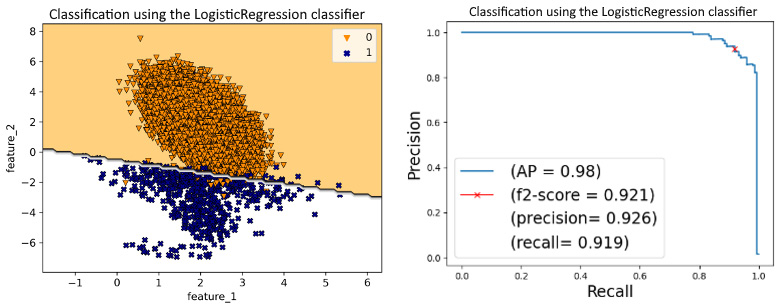
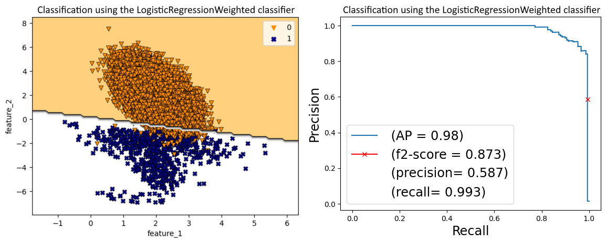
비용 민감 학습(CSL) vs 리샘플링(SMOTE) 비교
리샘플링: 데이터 자체를 변경 → 오버피팅 위험, 학습 시간 ↑
CSL: 손실 함수 내에서 가중치 조절 → 데이터 불변, 학습 시간 동일
둘 다 불량에 더 민감하게 만드는 건 같음
실무에서는 둘 다 해보고 더 잘 되는 쪽 선택④ 임계값 조정: 0.5가 항상 최선이 아니다 (2분)
📖 ML for Imbalanced Data Ch.5 — Threshold Adjustment
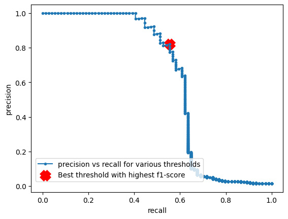
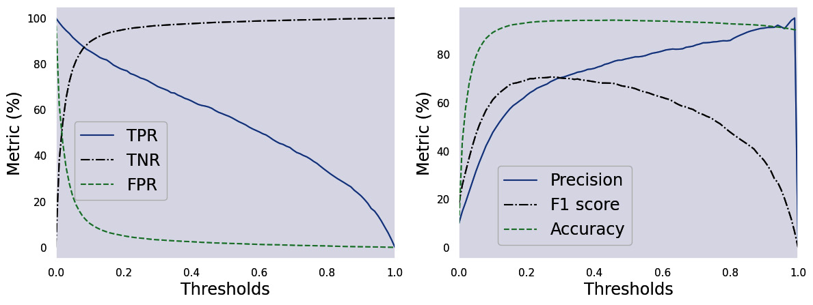
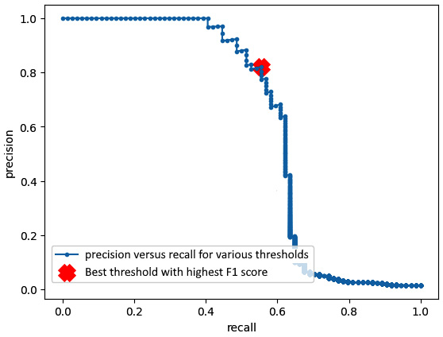
모델 출력: P(불량) = 0.3 → 기본(0.5 기준): "정상"
임계값을 0.2로 낮추면: P(불량) = 0.3 → "불량" ← 더 민감하게
트레이드오프:
- 임계값 ↓: Recall ↑, Precision ↓ (더 많이 잡지만 오탐도 증가)
- 임계값 ↑: Recall ↓, Precision ↑ (덜 잡지만 잡으면 맞음)from sklearn.metrics import precision_recall_curve
import numpy as np
probas = model.predict_proba(X_test)[:, 1]
precision, recall, thresholds = precision_recall_curve(y_test, probas)
f1_scores = 2 * precision * recall / (precision + recall + 1e-8)
best_threshold = thresholds[np.argmax(f1_scores)]실무 주의사항: 이 최적 임계값은 현재 테스트셋에서 가장 좋은 값이지, 미래 데이터에서도 항상 최고라는 뜻은 아닙니다. 현장에서는 검증셋을 따로 두고 거기서 찾은 임계값을 실제 서비스에 씁니다.
2-3. Claude Code 시연 (10분)
불량률 1%인 제조 데이터를 시뮬레이션해줘.
1. 기본 RandomForest 모델 학습
2. SMOTE 적용 후 재학습
3. class_weight='balanced' 적용 후 재학습
세 모델의 Confusion Matrix와 F1-score를 나란히 비교하는 시각화를 만들어줘.시연 후 추가 질문: "SMOTE가 항상 최선인가? 안 쓰는 게 나을 때는?"
2-4. 실습 (19분)
STEP 1 데이터 준비
from sklearn.datasets import make_classification
from sklearn.model_selection import train_test_split
from sklearn.ensemble import RandomForestClassifier
from sklearn.metrics import f1_score, recall_score
from imblearn.over_sampling import SMOTE
X, y = make_classification(n_samples=10000, weights=[0.99, 0.01],
n_features=10, random_state=42)
X_train, X_test, y_train, y_test = train_test_split(X, y, test_size=0.2, random_state=42)STEP 2 k_neighbors별 실험
results = {}
for k in [3, 5, 7, 10]:
smote = SMOTE(k_neighbors=k, random_state=42)
X_res, y_res = smote.fit_resample(X_train, y_train)
model = RandomForestClassifier(random_state=42).fit(X_res, y_res)
pred = model.predict(X_test)
results[k] = {'f1': f1_score(y_test, pred), 'recall': recall_score(y_test, pred)}STEP 3 결과 비교
import matplotlib.pyplot as plt
ks = list(results.keys())
plt.plot(ks, [results[k]['f1'] for k in ks], marker='o', label='F1')
plt.plot(ks, [results[k]['recall'] for k in ks], marker='s', label='Recall')
plt.xlabel('k_neighbors'); plt.ylabel('score'); plt.legend(); plt.show()CNC 이상탐지 파이프라인 — 공구 마모 시작점 잡기
50분
참고 교재: Machine Learning for Time-Series with Python (Ben Auffarth)
소요 시간: 문제 제기+검증 5분 + 이론 15분 + 시연 15분 + 실습 15분
3-1. 문제 제기 + 데이터 확인 (5분)
목표: 공구 마모가 시작되는 순간을 실시간으로 포착할 수 있을까?
[공구 마모 진행 단계]
정상 가공 초기 마모 시작 심각한 마모
↓ ↓ ↓
진동 안정적 진동 약간 증가 진동 급격히 증가
RMS 낮음 RMS 서서히 상승 RMS 급등, 불규칙이 순간을 잡지 못하면: 마모된 공구로 계속 가공 → 불량, 공구 교체 시점 놓침 → 심각한 손상, 비용 증가
3-2. 이론: 파이프라인 설계 논리 (15분)
① 왜 Raw Signal을 그대로 쓰면 안 되는가 (5분)
📖 ML for Time-Series Ch.3 Preprocessing / Ch.4 ML for Time-Series
차원의 저주: 1초에 10,000개 샘플 × 10시간 = 3억 6천만 개의 입력값. 모델이 노이즈와 신호를 구분하기 어려움.
[핵심 특징 3가지 — 물리적으로 의미 있는 숫자로 압축]
1. RMS (Root Mean Square) — 신호의 에너지
RMS = √(Σx² / N) → 마모 진행될수록 RMS 상승
2. Peak Value — 순간 최대 진폭
→ 채터링, 충격 발생 시 급등
3. Kurtosis — 신호의 첨도 (뾰족한 정도)
Kurtosis = E[(X-μ)⁴] / σ⁴
→ 정상: ~3 (정규분포), 결함 발생: 3 이상으로 상승

def extract_features(signal_window):
rms = np.sqrt(np.mean(signal_window**2))
peak = np.max(np.abs(signal_window))
mean = np.mean(signal_window)
std = np.std(signal_window)
kurtosis = np.mean(((signal_window - mean) / std)**4) if std > 0 else 0
return {'rms': rms, 'peak': peak, 'kurtosis': kurtosis}② 이상탐지 방식 선택: 레이블 유무에 따른 전략 (5분)
📖 ML for Time-Series Ch.6 Unsupervised Methods
[상황에 따른 방법 선택]
레이블 있음 (정상/불량 알고 있음)
→ 지도학습: RandomForest, SVM + 섹션 2의 불균형 처리 기법
레이블 없음 (정상이 어떤 것인지만 알고 있음)
→ 비지도 이상탐지: Isolation Forest, One-Class SVM
→ 실제 현장에서 더 흔한 상황!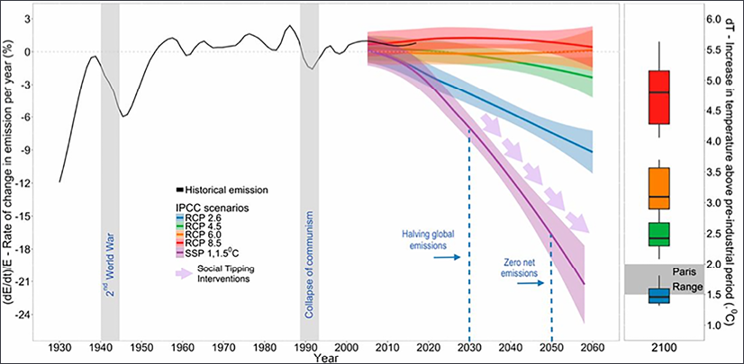
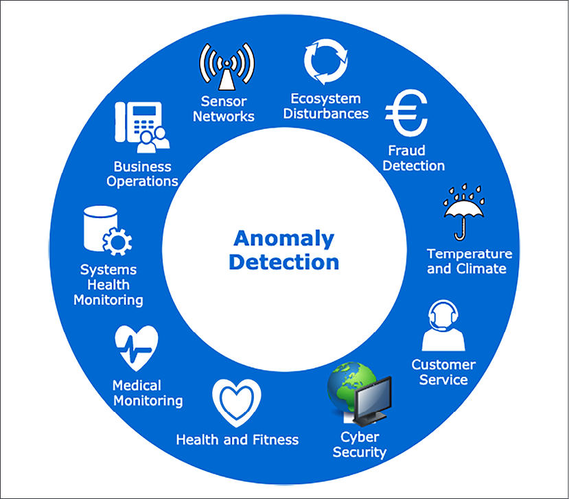
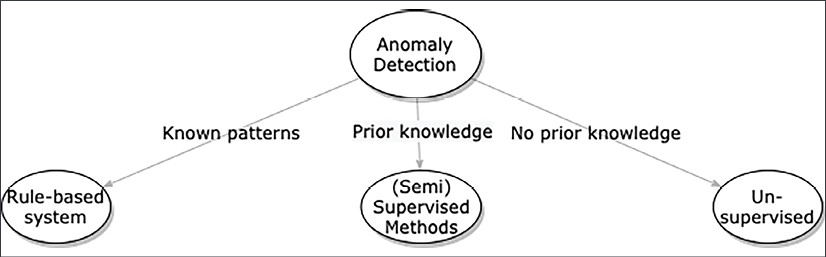
Isolation Forest 원리 — "이상값은 고립시키기 쉽다"
랜덤하게 데이터를 분할할 때:
- 정상 데이터: 많은 분할이 필요 (데이터가 밀집)
- 이상 데이터: 적은 분할로 고립됨 (데이터가 희박)
→ 고립에 필요한 평균 분할 수 = 이상 점수from sklearn.ensemble import IsolationForest
model = IsolationForest(contamination=0.05, random_state=42)
model.fit(X_normal) # 정상 데이터로만 학습
predictions = model.predict(X_test) # 1: 정상, -1: 이상시계열 이상의 3가지 유형
1. Point Anomaly (점 이상):
개별 포인트가 정상 범위를 벗어남
→ 예: 순간 전원 서지, 센서 고장
2. Contextual Anomaly (문맥적 이상):
값은 정상 범위 내지만 문맥상 비정상
→ 예: 공구 마모 초기의 미세한 RMS 증가
3. Collective Anomaly (집단 이상):
개별 값은 정상이지만 연속된 패턴이 비정상
→ 예: 진동 주파수가 서서히 이동하는 채터링 패턴이상탐지 vs 변화점 탐지 — 공구 마모 시작점의 본질
이상탐지: "이 데이터 포인트는 비정상이다"
변화점 탐지: "이 시점부터 데이터의 분포가 변했다"
공구 마모 탐지에서의 의미:
→ 마모 시작점 = 변화점 (change point)
→ 정상 구간 → 마모 구간으로 전환되는 시점
→ 이상 점수가 급증하는 시점을 찾는 것 = 변화점 탐지
구현: Isolation Forest → 이상 점수 시계열 계산
→ 이동평균 또는 CUSUM으로 급증 시점 탐지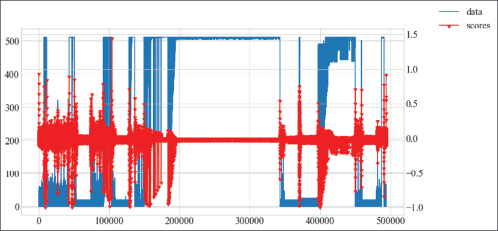
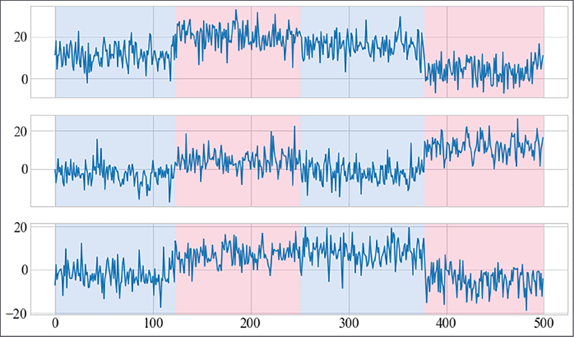
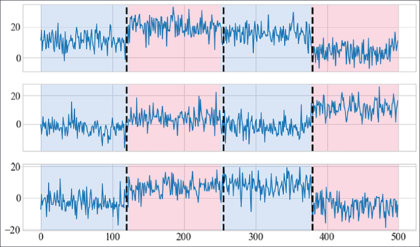
온라인/실시간 이상탐지
배치 처리 vs 스트리밍 처리:
배치: 전체 데이터를 한 번에 처리 (지금까지의 실습)
스트리밍: 데이터가 들어오는 즉시 실시간 처리
실시간 처리 도구 (River 라이브러리):
from river import anomaly
model = anomaly.HalfSpaceTrees(n_trees=25, height=15, window_size=250)
for x in data_stream:
score = model.score_one(x)
model.learn_one(x)
if score > threshold: trigger_alert()③ 전체 파이프라인 설계 (5분)
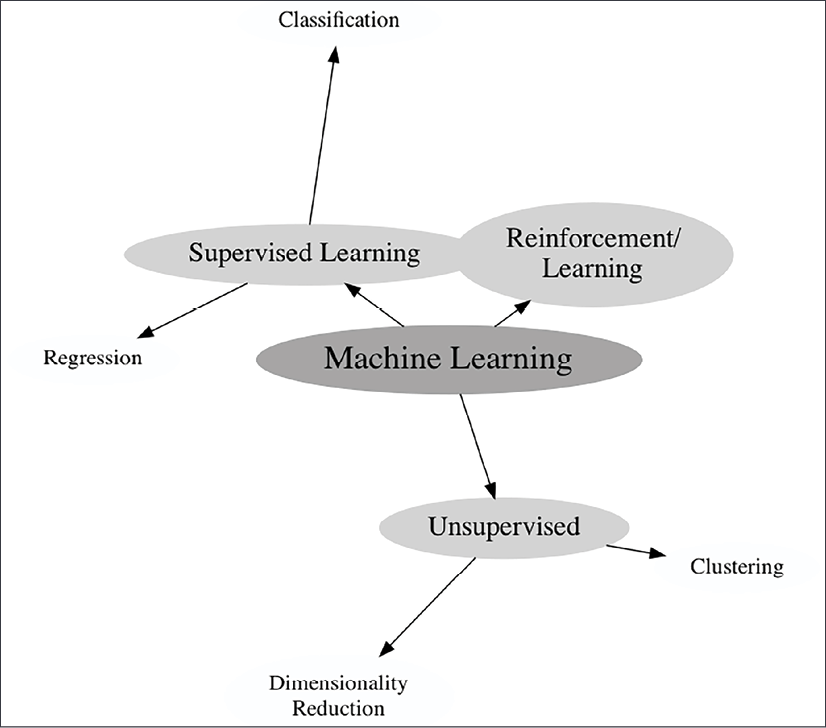
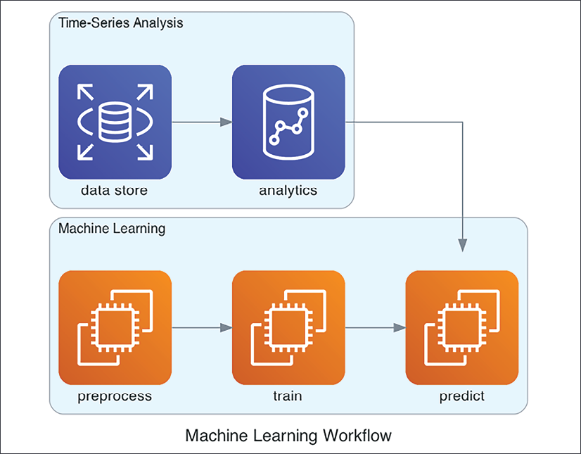
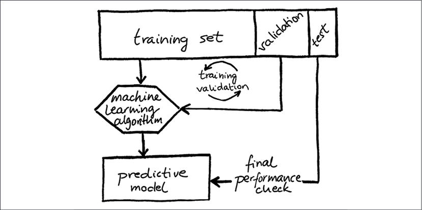
[CNC 공구 마모 탐지 파이프라인]
1. 데이터 수집 → 센서 실시간 스트림
2. 전처리 (섹션 1) → Wavelet 노이즈 제거
3. 윈도우 분할 → 슬라이딩 윈도우 (1초, 0.5초 겹침)
4. 특징 추출 → [RMS, Peak, Kurtosis]
5. 이상탐지 → Isolation Forest → 이상 점수
6. 알림 → 이상 점수 > 임계값 → 경보시계열 교차 검증 — 일반 k-fold를 쓰면 안 되는 이유
시계열에서 k-fold CV를 쓰면 "미래 데이터로 과거 예측"하는 데이터 누수 발생
→ 대신 TimeSeriesSplit 사용: 과거로 학습, 이후로 검증
from sklearn.model_selection import TimeSeriesSplit
tscv = TimeSeriesSplit(n_splits=5)
for train_idx, test_idx in tscv.split(features):
model.fit(features[train_idx])
scores = model.score_samples(features[test_idx])오차 지표 선택 — 회귀 vs 분류
회귀 (이상 점수 연속값):
MSE: 오차 제곱 평균 → 이상치에 민감
MAE: 오차 절대값 평균 → 이상치에 덜 민감
RMSE: MSE의 제곱근 → 원래 단위와 동일 스케일
분류 (정상/이상 이진):
→ 섹션 2에서 배운 Precision, Recall, F1-Score가 그대로 적용
→ 불균형 데이터이므로 Accuracy 지양, PR Curve + F1 권장3-3. Claude Code 시연 (15분)
CNC 밀링머신 공구 마모 탐지 파이프라인을 만들어줘.
- 시뮬레이션 데이터: 정상 구간 + 마모 시작 구간 포함
- 단계: Wavelet 노이즈 제거 → 슬라이딩 윈도우 특징 추출 → Isolation Forest
- 각 단계 결과를 subplot으로 시각화
- contamination=0.05시연 후 추가 질문: "탐지 민감도를 높이려면 어떤 파라미터를 조정해야 하고, 트레이드오프는?"
3-4. 실습 (15분)
STEP 1 가상 마모 신호
np.random.seed(42)
t = np.linspace(0, 10, 10000)
signal = np.sin(2 * np.pi * 50 * t)
signal[5000:7000] += 0.3 * np.random.randn(2000) # 마모 시작
signal[7000:] += 0.8 * np.random.randn(3000) # 심각한 마모STEP 2 Wavelet 노이즈 제거
def denoise(signal, wavelet='db4', level=5):
coeffs = pywt.wavedec(signal, wavelet, level=level)
threshold = np.sqrt(2 * np.log(len(signal))) * np.std(coeffs[-1])
coeffs[1:] = [pywt.threshold(c, threshold, mode='soft') for c in coeffs[1:]]
return pywt.waverec(coeffs, wavelet)STEP 3 슬라이딩 윈도우 특징 추출
def extract_features_windowed(signal, window_size=100, step=50):
features = []
for i in range(0, len(signal) - window_size, step):
w = signal[i:i+window_size]
rms = np.sqrt(np.mean(w**2))
peak = np.max(np.abs(w))
std = np.std(w)
kurt = np.mean(((w - np.mean(w)) / (std + 1e-8))**4)
features.append([rms, peak, kurt])
return np.array(features)STEP 4 Isolation Forest
for contamination in [0.01, 0.05, 0.10]:
model = IsolationForest(contamination=contamination, random_state=42)
model.fit(features)
scores = -model.score_samples(features) # 클수록 이상
# TODO: 시간 축에 맞춰 scores 시계열로 시각화심화 학습 자료
섹션 1 — 신호 처리 심화
| Wavelet 계열 | 특성 | 적합한 용도 |
|---|---|---|
| Haar | 가장 단순, 불연속 | 단계 함수, 빠른 계산 |
| Daubechies (db) | 비대칭, 지지 소형 | 일반적 제조 진동 |
| Symlets (sym) | db보다 대칭 | 위상 왜곡 민감 |
| Coiflets (coif) | 높은 소멸 모멘트 | 부드러운 신호 |
| Morlet | 연속, 복소수 | 주파수 분석 중심 |
추천 학습 경로 (Think DSP)
| # | 챕터 | 핵심 |
|---|---|---|
| 1 | Ch.1 Sounds and Signals | 신호, 주파수, 스펙트럼 |
| 2 | Ch.3 Non-Periodic Signals | Spectrogram, Gabor Limit |
| 3 | Ch.4 Noise | 백색/갈색/분홍/가우시안 |
| 4 | Ch.7 DFT | FFT 심화 |
| 5 | Ch.8 Filtering | Convolution Theorem |
섹션 2 — 불균형 데이터 심화
| # | 챕터 | 핵심 |
|---|---|---|
| 1 | Ch.1 Introduction | 정확도 역설, Confusion Matrix |
| 2 | Ch.2 Oversampling | SMOTE, ADASYN, Borderline |
| 3 | Ch.3 Undersampling | Tomek Links, ENN, NearMiss |
| 4 | Ch.4 Ensemble | EasyEnsemble, RUSBoost |
| 5 | Ch.5 CSL | class_weight, MetaCost |
| 6 | Ch.10 Calibration | Platt Scaling, Brier Score |
섹션 3 — 이상탐지 심화
| 알고리즘 | 방식 | 장점 | 단점 |
|---|---|---|---|
| Isolation Forest | 트리 분리 | 빠름, 고차원 | contamination 설정 |
| One-Class SVM | 경계 학습 | 이론적 근거 | 느림, 파라미터 민감 |
| LOF | 밀도 기반 | 지역적 탐지 | n_neighbors 필요 |
| AutoEncoder | 딥러닝 | 복잡 패턴 | 데이터 많이 필요 |
추천 학습 경로 (ML for Time-Series)
| # | 챕터 | 핵심 |
|---|---|---|
| 1 | Ch.3 Preprocessing | Feature Engineering, ROCKET |
| 2 | Ch.4 ML for Time-Series | Classification, Evaluation |
| 3 | Ch.6 Unsupervised | Anomaly Detection, CPD |
| 4 | Ch.7 ML Models | KNN+DTW, Gradient Boosting |
| 5 | Ch.8 Online Learning | Drift Detection, Adaptive |
실제 CNC 밀링머신 데이터 분석 결과
실제 CNC 밀링머신 가속도 센서 데이터에 앞서 배운 기법들을 적용한 결과입니다.
데이터 개요 및 핵심 발견
[실제 CNC 밀링머신 데이터 구성]
데이터: 13개 CSV 파일, 2,994,307개 샘플
센서: 3축 가속도 센서 (acc_x, acc_y, acc_z)
3가지 조건:
정상 (normal) — 12.0%
채터링 (chatter) — 10.1%
마모 (wear) — 77.9%핵심 발견 — 조건별 acc_x 통계량 비교
표준편차 (std):
Normal: 5.88 ← 매우 안정적
Wear: 292 ← Normal의 약 50배
Chatter: 373 ← Normal의 약 63배
RMS (Root Mean Square):
Normal: 28.58
Wear: 220
Chatter: 363
→ Normal, Wear, Chatter 간 명확한 구분 가능
→ RMS와 std 모두 조건 분별력이 뛰어남주파수 분석 결과
지배 주파수 (Dominant Frequency):
Normal: 1–2kHz ← 안정적인 저주파 영역
Chatter: ~4kHz ← 고주파 떨림 특성
Wear: 1.5–5kHz ← 넓은 주파수 대역 분포
→ FFT 스펙트럼 분석으로도 조건 구분 가능 확인Wavelet 노이즈 제거 결과
실제 채터링 데이터에 적용
채터링 데이터(label_11, acc_x)에 db4 wavelet, level=5, soft threshold를 적용한 결과:
[적용 파라미터]
Wavelet: db4 (Daubechies 4)
Level: 5
Threshold: soft threshold
대상: 채터링 데이터 (label_11, acc_x)
[결과]
원본 std 대비 노이즈 성분이 효과적으로 제거됨을 확인
→ 섹션 1에서 배운 파이프라인이 실제 데이터에도 유효클래스 불균형 처리 결과
RandomForest 기반 비교 실험
실제 데이터는 마모 77.9%, 정상 12.0%, 채터링 10.1%로 심각한 불균형 상태입니다. 세 가지 접근법을 비교했습니다.
| 방법 | F1-Score | 정상 클래스 Recall | 비고 |
|---|---|---|---|
| Basic RandomForest | 0.99 | 0.98 | 기본 모델 |
| SMOTE + RandomForest | 0.99 | 0.99 | 소수 클래스(정상) recall 개선 |
| class_weight='balanced' | 0.98 | — | 손실함수 가중치로도 유사한 성능 |
핵심 인사이트: SMOTE 적용 시 소수 클래스(정상)의 Recall이 0.98에서 0.99로 개선되었습니다. class_weight만으로도 유사한 수준의 성능을 달성할 수 있어, 현장 상황에 따라 더 간단한 방식을 선택할 수 있습니다.
Isolation Forest 이상탐지 결과
정상 데이터로만 학습한 이상탐지 모델
[모델 설정]
알고리즘: IsolationForest
학습 데이터: 정상(normal) 조건 데이터만 사용
contamination: 0.05이상 점수(Anomaly Score) 분포
Normal 조건:
→ 낮고 안정적인 이상 점수 (정상 범위)
Chatter 조건:
→ 높은 이상 점수 — 채터링 패턴이 정상과 확연히 다름
Wear 조건:
→ 높은 이상 점수 — 마모로 인한 진동 변화가 명확히 감지됨
→ 마모 시작점 탐지 가능 확인!
→ 섹션 3에서 설계한 파이프라인이 실제 데이터에서도 작동실무 인사이트: 정상 데이터로만 학습해도 Chatter와 Wear 조건을 명확히 구분할 수 있었습니다. 이는 실제 현장에서 라벨링 비용을 크게 절감할 수 있다는 것을 의미합니다.